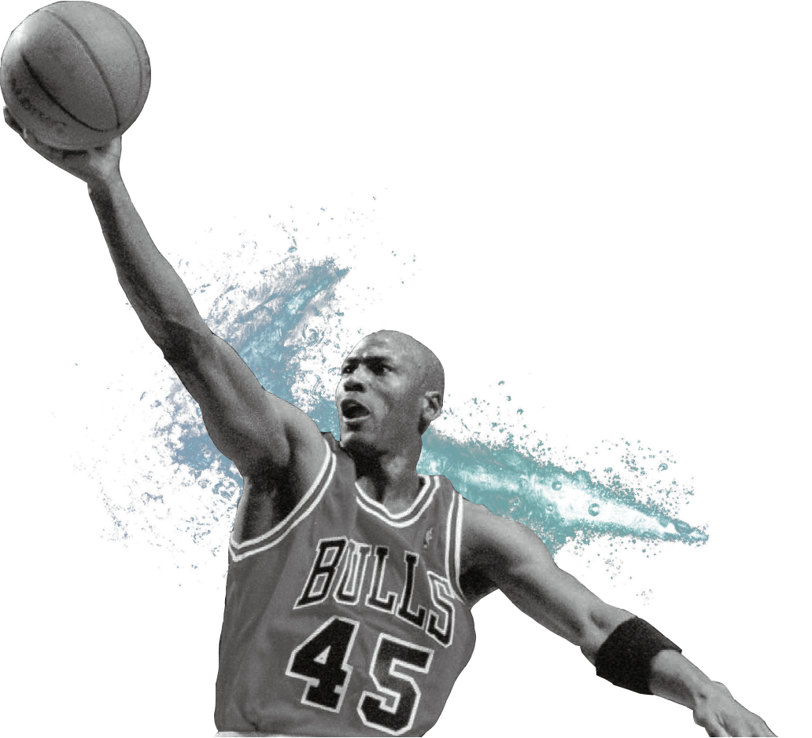

나이키가 조던 브랜드의 전통적 가치를 현대적인
아름다움과 혁신으로 재설정해 세대를 초월하는
문화적 커뮤니티 공간으로 자리매김할 ‘조던 서울(JORDAN SEOUL)’을 오는 30일 신사동 가로수길에 문을 연다. 루프탑 공간을 포함해 총 5개 층으로
구성된 조던 서울은 각 층을 대표하는 스토리텔링
요소를 더해 더욱 특별한 볼거리를 제공한다.
아름다움과 혁신으로 재설정해 세대를 초월하는
문화적 커뮤니티 공간으로 자리매김할 ‘조던 서울(JORDAN SEOUL)’을 오는 30일 신사동 가로수길에 문을 연다. 루프탑 공간을 포함해 총 5개 층으로
구성된 조던 서울은 각 층을 대표하는 스토리텔링
요소를 더해 더욱 특별한 볼거리를 제공한다.